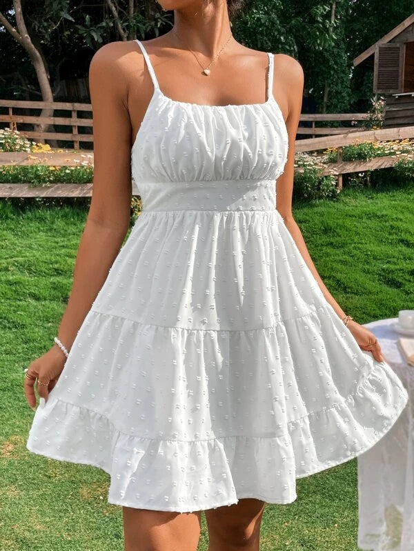

A origem dos vestuários remonta aos primeiros estágios da evolução humana, quando os seres humanos começaram a usar materiais naturais para se proteger contra o clima, e também como uma forma de expressar identidade e status social.
As calças jeans, ou simplesmente jeans, são uma das peças de vestuário mais populares e icônicas no mundo todo. Sua origem remonta ao final do século XIX, mas sua evolução ao longo do tempo é marcada por fatores como inovação, funcionalidade, cultura e moda. As calças jeans surgiram no século XIX, quando Levi Strauss e Jacob Davis criaram um modelo resistente com tecido denim e rebites para mineradores e trabalhadores. Inicialmente, eram roupas de trabalho, mas nos anos 1950, se tornaram um ícone de rebeldia juvenil, especialmente com figuras como James Dean e Elvis Presley. Nos anos 1970-1990, os jeans se popularizaram em várias formas e cortes, tornando-se um item de moda global. Hoje, continuam a ser uma peça essencial e são produzidos com foco em sustentabilidade, com diversas variações de estilo e corte.
Os Moletons têm suas origens nos anos 1920, quando começaram a ser usados como roupas esportivas para atletas. Inicialmente feitos de algodão felpudo, eram usados para manter os atletas aquecidos durante os treinos. Nos anos 1970, com a popularização da cultura streetwear, os moletons se tornaram populares fora dos esportes, especialmente entre jovens. Nos anos 1980 e 1990, marcas como Nike e Adidas impulsionaram o uso casual, tornando-os um item de moda urbana. Hoje, os moletons são peças confortáveis e populares, usados tanto para atividades casuais quanto para a moda, com variações de estilos e designs.
Os vestidos têm uma longa história, com origens que remontam à Antiguidade, onde eram usados por homens e mulheres de diversas culturas, como egípcios, gregos e romanos. Inicialmente, eram peças simples e práticas. Durante a Idade Média, os vestidos passaram a refletir o status social, com tecidos mais ricos para a nobreza. No Renascimento, tornaram-se ainda mais elaborados, com saias volumosas e corsets. No século XX, com a evolução da moda, o vestido se diversificou em estilos, como o vestido tubinho dos anos 1920 e os vestidos de gala usados em eventos formais. Hoje, os vestidos variam em estilos, do casual ao sofisticado, sendo um ícone de feminilidade e elegância.